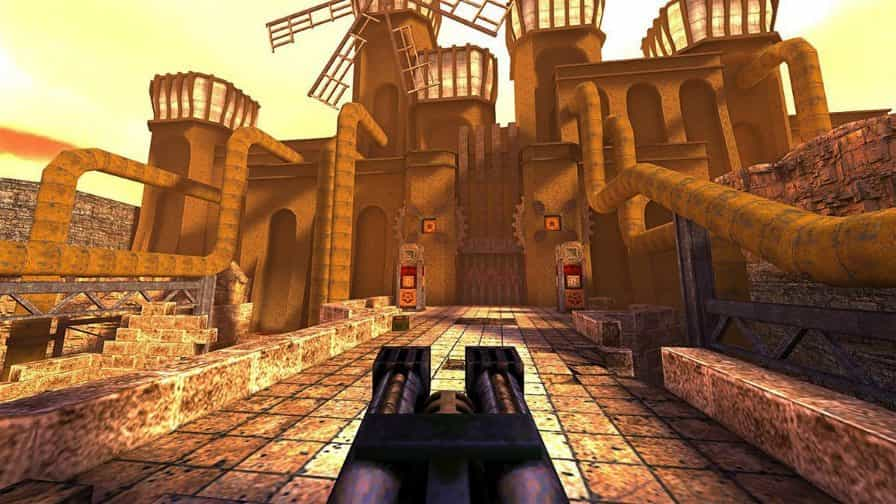

Quake 1
Postado 25 dezembro 2025
Quake (1996) é um dos jogos mais importantes da história dos videogames, especialmente no gênero tiro em primeira pessoa (FPS). Desenvolvido pela id Software, a mesma empresa responsável por Doom e Wolfenstein 3D, Quake marcou uma grande evolução tecnológica e conceitual para os jogos eletrônicos. Diferente de seus antecessores, Quake foi o primeiro FPS totalmente em ambientes 3D reais, com cenários, personagens e inimigos modelados em três dimensões. Isso permitiu maior liberdade de movimento, incluindo olhar para cima e para baixo, algo inovador para a época. O jogo combinava elementos de terror, fantasia sombria e ficção científica, com uma atmosfera pesada, trilha sonora ambiente e inimigos grotescos, criando uma experiência imersiva e tensa.
Outro grande destaque de Quake foi o modo multiplayer, que ajudou a popularizar partidas em rede local (LAN) e, mais tarde, pela internet. Ele foi fundamental para o surgimento do jogo competitivo online e dos primeiros campeonatos de eSports. Além disso, a id Software disponibilizou ferramentas que permitiam a criação de mods, o que fortaleceu a comunidade e prolongou a vida útil do jogo. O impacto de Quake vai além do entretenimento. Seu motor gráfico (Quake Engine) influenciou inúmeros jogos posteriores e até aplicações fora do mundo dos games, como simulações e visualizações 3D. Até hoje, Quake é lembrado como um marco tecnológico e cultural, sendo considerado um dos jogos mais influentes de todos os tempos.
VoltarPostagens Recentes
Os videogames, ou jogos eletrônicos, são um fenômeno econômico e socio-cultural que tem crescido rapidamente nas últimas décadas, devendo ser pensados em sua inserção na Indústria Cultural e como constituidores de um imaginário sobre o passado com características próprias...
Leia maisO primeiro homem a ganhar status de artista dos games foi o engenheiro americano Steve Russell, que em 1961 desenvolveu um jogo simples em um limitado (para os dias de hoje) computador...
Leia mais